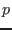
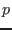

Queries  are added to the rules for expressions
are added to the rules for expressions  .
.
Additionally, an SQL expression may be inserted into normal Ur code with the syntax or . Similar shorthands exist for other nonterminals, with the prefix for items and for pre-queries.
Unnamed expression columns in
 clauses are assigned consecutive natural numbers, starting with 1. Any expression in a 
position that is enclosed in parentheses is treated as an expression column, rather than a column pulled directly out of a table, even if it is only a field projection. (This distinction affects the record type used to describe query results.)
clauses are assigned consecutive natural numbers, starting with 1. Any expression in a 
position that is enclosed in parentheses is treated as an expression column, rather than a column pulled directly out of a table, even if it is only a field projection. (This distinction affects the record type used to describe query results.)